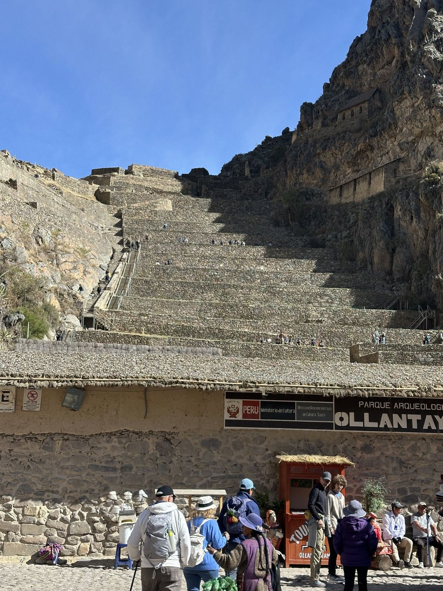

Capítulo 06 / 10
Valle Sagrado
De camino desde Puno, Raqchi y Andahuaylillas. Después, Ollantaytambo, Chinchero, Maras, Moray y Pisac.

Capítulo 06 / 10
De camino desde Puno, Raqchi y Andahuaylillas. Después, Ollantaytambo, Chinchero, Maras, Moray y Pisac.
